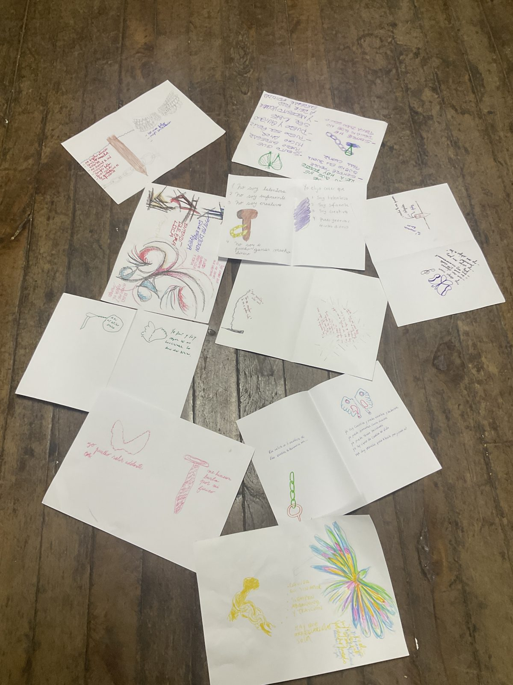
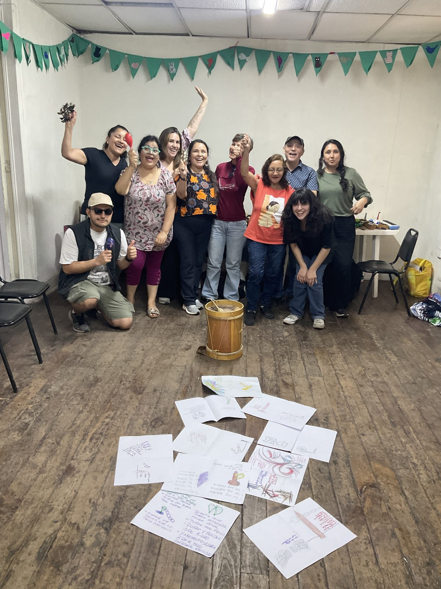

El cuento del elefante, las creencias que aprendimos, nuestras estacas y nuestras alas, y una gran fanfarria de instrumentos para decirnos: ¡tú puedes!
Volvimos a nuestra sede de Madrid 1648, con horario nuevo. 💚 Partimos, como siempre, jugando: con casa-inquilino y cara o sello nos movimos, nos reímos y fuimos cambiando de lugar y de pareja, conociéndonos un poco más como comunidad.
Luego llegaron los cuencos. Esta vez no solo los escuchamos: aprendimos a tocarlos, en dos grupos, para conectar con el presente y con el observador, esa parte de nosotros que se da cuenta de lo que pasa sin dejarse arrastrar.
Con el cuerpo tranquilo escuchamos el cuento de "El elefante encadenado" y conversamos sobre las creencias: esas ideas que aprendimos de pequeños, muchas veces de quienes más nos quisieron, y que todavía nos atan aunque ya crecimos. Después, de pie y con toda la voz, ¡arrancamos la estaca!
En la arteterapia "De la estaca a mis alas" cada persona dibujó, en una mitad de la hoja, aquello que la ata y las creencias que todavía la frenan, y en la otra mitad, sus alas: en cada pluma, un permiso o una creencia nueva.
Y cerramos con música: en la improvisación "Del amarre al vuelo" primero tocamos todos amarrados al mismo pulso rígido, después cada uno fue rompiendo el patrón mientras el grupo lo sostenía, y al final volamos todos juntos. El cierre fue el ritual "¡Tú puedes!": cada persona leyó un permiso de sus alas y el grupo le respondió con una fanfarria de instrumentos. 🎉🥁
Gracias por la valentía de mirar sus estacas y de leer en voz alta sus permisos. Darnos cuenta de lo que creemos es el primer paso para elegir algo nuevo, y hacerlo acompañados, con el grupo celebrando cada ala, lo hace todavía más fuerte. ¡Bravo, grupo! 💚

Cada hoja tiene dos mitades: la estaca, que es privada, y las alas, llenas de permisos. "Me doy permiso para expresarme", "puedo aprender a cualquier edad", "merezco descansar"… Guárdalas donde puedas verlas, junto a tu joya de la sesión 3.
Versión libre, contada con nuestras palabras.
Había una vez un niño al que le encantaba el circo. De todo el espectáculo, lo que más esperaba era el número del elefante: un animal enorme, pesado y fortísimo, que levantaba troncos, se paraba en dos patas y hacía temblar el suelo con cada paso.
Pero un día, al terminar la función, el niño vio algo que no pudo olvidar. Detrás de la carpa, el elefante estaba quieto, con una de sus patas atada con una cadena a una pequeña estaca de madera, apenas clavada unos centímetros en la tierra.
El niño no lo podía entender. Ese animal, capaz de arrancar un árbol de raíz, podía sacar esa estaca con un solo tirón y escaparse. ¿Por qué no lo hacía?
Preguntó a sus papás, a sus profesores, a sus tíos. Uno le dijo: "Porque está amaestrado". Y el niño insistió: "Pero si está amaestrado, ¿para qué lo atan?". Nadie le supo dar una respuesta que lo dejara tranquilo, y con el tiempo se olvidó de la pregunta.
Muchos años después, ya grande, se encontró con alguien sabio que le contó lo que de verdad había pasado.
"El elefante no se escapa porque lo ataron a una estaca muy parecida cuando era muy, muy pequeño. Ese día el elefantito tiró y tiró con todas sus fuerzas. Empujó, sudó, se cansó… y la estaca no se movió, porque para él, tan pequeño, era demasiado fuerte. Al día siguiente volvió a intentarlo, y al otro, y al otro."
"Hasta que un día, agotado, aceptó que no podía. Y ese fue el día más triste de su historia: desde entonces, cree que no puede."
"El elefante enorme que viste en el circo no se escapa porque recuerda la impotencia que sintió cuando era pequeño. Y lo peor es que nunca más volvió a ponerlo a prueba. Nunca más tiró de la estaca para ver si, ahora que creció, ya puede."
Y tú… ¿cuándo fue la última vez que tiraste de tu estaca?
Versión libre basada en "El elefante encadenado", de Jorge Bucay (Déjame que te cuente).
Para pensar en la semana:
Las creencias son ideas que aprendimos tan temprano, y repetimos tantas veces, que se volvieron verdades. Ya no las pensamos: simplemente actuamos desde ellas. Son como unos lentes a través de los cuales miramos el mundo, y que solemos confundir con el mundo mismo.
¿Recuerdan el sábado anterior? Cuando alguien se emocionó, a varios nos salió de inmediato: "pobrecita, no llores". Esa es una creencia aprendida: "llorar está mal", "hay que aguantarse", "los hombres no lloran". Nadie la eligió: nos la pasaron. Y sigue funcionando sola, aunque ya sabemos que expresar lo que sentimos es justamente lo que nos hace bien.
El problema no es la estaca: es que crecimos y no volvimos a probar.
¿De dónde vienen? Muchas veces, de las personas que más nos quisieron: "no te subas, que te vas a caer", "no hagas ruido", "tú no eres bueno para esto". La mayoría lo dijo para cuidarnos, con lo que sabían y con sus propios miedos. Por eso no se trata de culpar a nadie, sino de agradecer el cuidado y revisar qué creencias nos siguen sirviendo y cuáles nos están atando.
Y una idea importante: la estaca, en su momento, nos dio seguridad. Cada persona tiene las creencias que necesitó para sentirse protegida y querida. Por eso cuesta soltarlas, y por eso conviene hacerlo con cariño, sin apuro. Cuando aparece el Testigo (sesión 2) y nos damos cuenta de una creencia, ya no somos esa creencia: podemos mirarla, y podemos elegir.
Esta vez el tema no solo lo conversamos y lo dibujamos: también lo tocamos.
Todos tocamos el mismo pulso, rígido y parejo, repitiendo "No – se – pue – de". Nadie podía salirse. Se sintió monótono y apretado… pero también cómodo y seguro. Así funcionan las creencias.
De uno en uno, cada persona rompió el patrón y tocó a su manera, mientras el grupo la sostenía con el pulso. El mismo ritmo que antes amarraba, ahora sostenía.
Al final volamos todos libres, escuchándonos, hasta gritar juntos "¡Sí, yo puedo!". Y en el ritual "¡Tú puedes!", cada permiso fue celebrado con una fanfarria de instrumentos. 🎉
Algunos momentos del quinto encuentro. Toca una foto para verla en grande.
🎲 Conocernos como comunidad · 🔔 Aprendiendo a tocar los cuencos · 🪶 Dibujando nuestras alas

Todo cambia: las estaciones, el cuerpo, las circunstancias, las personas que nos rodean… y también nuestras creencias. Lo que ayer fue verdad, hoy puede no serlo. Este video nos invita a mirar los ciclos de la vida (los momentos de crecer y los de soltar) sin aferrarnos ni resistirnos, porque cada final deja espacio para que algo nuevo pueda nacer.
¿No se ve el video? Ábrelo directamente en YouTube →
Cómo verlo:
Texto de Eckhart Tolle, "La impermanencia y los ciclos de la vida" (El poder del ahora), en video publicado en YouTube por el canal Yianeli Millán.
Escribe 3 "debería" que te repites (debería ser más…, debería hacer…, no debería…). Cambia cada uno por "elijo…" o "me doy permiso para…" y fíjate qué cambia en el cuerpo al decirlo.
Cuando algo te parezca imposible, detente y pregúntate: ¿esto es verdad hoy, o es una estaca de cuando era pequeño o pequeña?
Pon tus alas donde puedas verlas cada día. Elige un permiso y léelo en voz alta en la mañana, como lo hicimos en el ritual.
Elige algo pequeño que siempre creíste que "no era para ti" (cantar, bailar, pedir ayuda, decir que no…) y pruébalo esta semana. Solo un tirón, para ver si ahora que creciste, ya puedes.
Piensa en una persona importante de tu infancia y anota las frases que te repetía. Agradece el cuidado que había detrás y pregúntate: ¿cuál de estas frases me sigue sirviendo y cuál ya no?
Antes de dormir: ¿En qué he progresado hoy? ¿Qué cualidades positivas he expresado hoy?
Del quinto encuentro (los cuencos, el elefante, tu estaca, tus alas, el vuelo con los instrumentos…), ¿qué se quedó contigo? Compártelo aquí: una palabra, una frase, o el permiso que te diste.
Muy pronto podrás dejar aquí tu reflexión. Mientras tanto, compártela en el grupo de WhatsApp 💚
Las reflexiones se publican de forma anónima. Antes de aparecer aquí pueden tardar unos minutos. Las de la semana anterior están en la sesión 4.